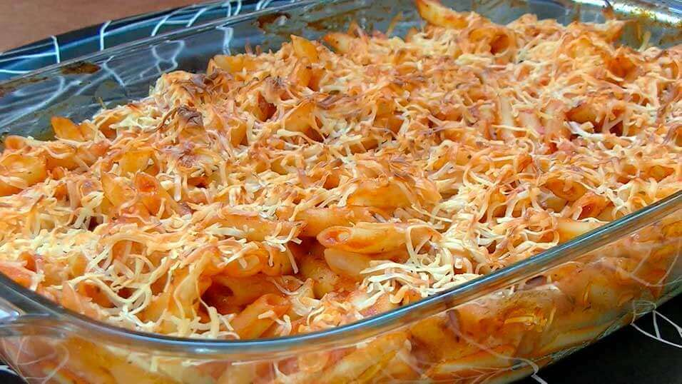

Macarrones gratinados con tomate
Como preparar unos macarrones gratinados con tomate

INGREDIENTES
- Pasta de macarrones
- Tomate frito
- Queso rayado (especifico para gratinar)
ELABORACION
- Primero ponemos agua a cocer y cuando ya este haciendo burbujas, metemos la pasta de macarron
- Cuando la pasta este blanda y lista, la metemos en una bandeja
- Encima de los macarrones echamos el tomatate y el queso rayado (si te gusta el queso, tambien puedes echar queso en polvo
- Los metemos en el horno a 180 y esperamos hasta que el queso se haya fundido
- I por ultimo A DISFRUTAR!!!!